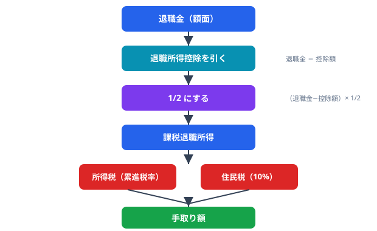
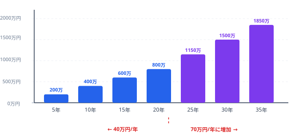

退職金を受け取るとき、「税金でいくら引かれるのか」「手取りはどれくらいになるのか」は誰もが気になるポイントです。退職金には給与とは異なる特別な税制が用意されており、長年の勤務に対する優遇措置として大幅な控除を受けることができます。この記事では、退職金にかかる税金の計算方法を、具体的な数字を使いながらわかりやすく解説します。
退職金の税金の特徴（分離課税）
退職金にかかる税金には、給与所得とは異なる大きな特徴があります。
分離課税で計算される
退職金は「退職所得」として、他の所得（給与所得や事業所得など）とは分離して税額を計算します。これを「分離課税」と呼びます。給与所得と合算されないため、退職金をもらったことで給与の税率が上がる心配はありません。
退職所得控除で大幅に軽減される
退職金の全額に課税されるわけではなく、「退職所得控除」という大きな非課税枠があります。勤続年数が長いほど控除額が大きくなるため、長年勤めた方ほど有利です。
課税対象がさらに1/2になる
退職金から退職所得控除を引いた後の金額が、さらに1/2になります。つまり、実際に課税される金額は非常に少なくなります。退職金に対する税負担が軽くなるよう設計されているのです。
退職所得の計算式をまとめると以下の通りです。
退職所得 =（退職金 - 退職所得控除額） × 1/2
※勤続年数5年以下の役員等の場合は1/2の適用がありません。また、2022年以降は勤続年数5年以下の一般従業員でも、退職所得控除を引いた後の金額が300万円を超える部分は1/2の適用がありません。
退職所得控除の計算方法
退職所得控除額は、勤続年数によって以下のように計算します。
| 勤続年数 | 退職所得控除額 |
|---|---|
| 20年以下 | 40万円 × 勤続年数（最低80万円） |
| 20年超 | 800万円 + 70万円 ×（勤続年数 - 20年） |
勤続年数の計算にはいくつかのルールがあります。
- 1年未満の端数は切り上げて1年とする（例：勤続19年3か月 → 20年として計算）
- 休職期間も勤続年数に含まれる
- 障害者になったことが直接の原因で退職した場合は、控除額に100万円が加算される

勤続年数別の退職所得控除額
代表的な勤続年数に対する退職所得控除額を一覧にまとめました。
| 勤続年数 | 退職所得控除額 | 計算式 |
|---|---|---|
| 5年 | 200万円 | 40万円 × 5年 |
| 10年 | 400万円 | 40万円 × 10年 |
| 15年 | 600万円 | 40万円 × 15年 |
| 20年 | 800万円 | 40万円 × 20年 |
| 25年 | 1,150万円 | 800万円 + 70万円 × 5年 |
| 30年 | 1,500万円 | 800万円 + 70万円 × 10年 |
| 35年 | 1,850万円 | 800万円 + 70万円 × 15年 |
| 38年 | 2,060万円 | 800万円 + 70万円 × 18年 |
例えば、大学卒業後に定年まで38年間勤務した場合、退職所得控除額は2,060万円です。つまり、退職金が2,060万円以下であれば税金はゼロになります。

所得税・住民税の計算手順
退職金にかかる税金は、以下の手順で計算します。
ステップ1: 退職所得を計算する
退職所得 =（退職金 - 退職所得控除額） × 1/2
※1,000円未満は切り捨て
ステップ2: 所得税額を計算する
退職所得に対して、以下の所得税率を適用します。
| 課税退職所得金額 | 税率 | 控除額 |
|---|---|---|
| 195万円以下 | 5% | 0円 |
| 195万円超～330万円以下 | 10% | 97,500円 |
| 330万円超～695万円以下 | 20% | 427,500円 |
| 695万円超～900万円以下 | 23% | 636,000円 |
| 900万円超～1,800万円以下 | 33% | 1,536,000円 |
| 1,800万円超～4,000万円以下 | 40% | 2,796,000円 |
| 4,000万円超 | 45% | 4,796,000円 |
所得税額 = 課税退職所得金額 × 税率 - 控除額
ステップ3: 復興特別所得税を加算する
2037年までは所得税額に2.1%の復興特別所得税が加算されます。
復興特別所得税 = 所得税額 × 2.1%
※1円未満切り捨て
ステップ4: 住民税を計算する
住民税は退職所得に対して一律10%（市区町村民税6% + 都道府県民税4%）です。
住民税 = 課税退職所得金額 × 10%
※100円未満切り捨て
ステップ5: 手取り額を求める
手取り額 = 退職金 - 所得税 - 復興特別所得税 - 住民税
具体例：勤続20年で退職金1,000万円の場合
実際に数字を入れて計算してみましょう。
前提条件
- 退職金: 1,000万円
- 勤続年数: 20年
計算過程
1. 退職所得控除額
勤続20年なので、40万円 × 20年 = 800万円
2. 退職所得
（1,000万円 - 800万円） × 1/2 = 100万円
3. 所得税
100万円は「195万円以下」の税率5%に該当するため、100万円 × 5% = 50,000円
4. 復興特別所得税
50,000円 × 2.1% = 1,050円
5. 住民税
100万円 × 10% = 100,000円
6. 合計税額と手取り
所得税50,000円 + 復興特別所得税1,050円 + 住民税100,000円 = 151,050円
手取り額 = 1,000万円 - 151,050円 = 9,848,950円
退職金1,000万円に対して税金は約15万円。手取りは約985万円で、税負担は約1.5%と非常に軽いことがわかります。これが退職金の税制優遇の大きさです。
ご自身の退職金の手取り額を計算してみましょう
退職金手取り計算ツールを使ってみる退職所得の受給に関する申告書
退職金を受け取る際に非常に重要な書類が「退職所得の受給に関する申告書」です。この書類を提出するかどうかで、税金の扱いが大きく変わります。
提出した場合（通常のケース）
会社が退職所得控除を適用した上で正しい税額を計算し、源泉徴収してくれます。確定申告は原則不要で、上で解説した計算方法で適正な税額が差し引かれた手取りを受け取れます。
提出しなかった場合
退職金の全額に対して一律20.42%が源泉徴収されます。退職所得控除が適用されないため、本来よりもはるかに多い税金が天引きされてしまいます。
例えば先ほどの例（退職金1,000万円）では、申告書を提出すれば税額は約15万円ですが、提出しないと1,000万円 × 20.42% = 約204万円が徴収されます。この場合、確定申告をすることで差額の約189万円が還付されますが、一時的に大きな金額が手元に残らないので注意が必要です。
通常は退職時に会社から提出を求められますが、万が一案内がなかった場合は自分から確認するようにしましょう。
iDeCo（個人型確定拠出年金）との関係
近年利用者が増えているiDeCo（個人型確定拠出年金）は、受取時に退職金と同じ「退職所得」として扱われます。このため、会社の退職金とiDeCoの受取タイミングによって、税金が変わる可能性があります。
退職所得控除の重複利用に注意
iDeCoの一時金と会社の退職金を同じ年に受け取ると、退職所得控除の勤続年数は両方を通算した期間で1回分しか適用されません。つまり、控除枠を二重に使うことはできません。
受取タイミングの工夫
2022年の税制改正により、退職金を受け取った後にiDeCoの一時金を受け取る場合、退職所得控除の勤続年数がリセットされるまでに19年（以前は5年）の期間が必要になりました。一方、iDeCoの一時金を先に受け取り、その後に退職金を受け取る場合は、5年の間隔を空ければ控除枠がリセットされます。
したがって、iDeCoを60歳で一時金として受け取り、退職金を65歳の定年退職時に受け取るなど、5年以上の間隔を空ける方法が税務上有利になるケースがあります。ただし、受取方法（一時金・年金・併用）の選択は老後の生活設計全体を考慮して決めるべきで、税金だけで判断すべきではありません。
iDeCoを年金として受け取る場合
iDeCoを年金（分割）で受け取る場合は「公的年金等の雑所得」として課税されます。退職所得控除は使えませんが、公的年金等控除が適用されます。一時金と年金の併用も可能なので、自分の状況に応じた受取方法を検討しましょう。
まとめ
退職金の税金は、通常の給与と比べて大幅に優遇されています。ポイントを整理すると以下の通りです。
- 退職金は分離課税で、他の所得と合算されない
- 退職所得控除が大きく、勤続20年で800万円、30年で1,500万円の非課税枠がある
- 控除後の金額がさらに1/2になるため、実質的な税負担は非常に軽い
- 「退職所得の受給に関する申告書」を必ず提出する（提出しないと20.42%が源泉徴収される）
- iDeCoとの受取タイミングによって税額が変わるため、計画的に検討する
退職金の手取りがいくらになるか気になる方は、当サイトの計算ツールで簡単にシミュレーションできます。勤続年数と退職金額を入力するだけで、税額と手取り額がすぐにわかります。
退職金の手取り額を今すぐ計算
退職金手取り計算ツールを使ってみる